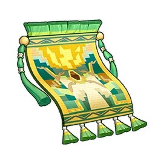

Natlan · Books & Literature
Records of Hanan Pacha
This three-volume Natlan fable tells how the Sage of the Stolen Flame obtained phlogiston and raised Hanan Pacha, before the Lord of the Night scattered its people across Natlan. Each volume explicitly warns that the tale has nothing to do with historical fact.

A fable that disclaims historical authority
All three volumes open with the same description: the story is an inherited fable whose main character is the legendary Sage of the Stolen Flame, and professional historians are said to agree that it has nothing to do with historical fact.
That qualification governs the book’s claims about dragons, phlogiston, Hanan Pacha, and the beginning of settled life in Natlan. The text is valuable evidence for a Natlan folk tradition, but it does not establish those events as literal history.
Volume I: the stolen flame
The tale begins in an age when dragons ruled the land. A vain winged dragon hoards Pyrophosphorite, described as a crystal refined from primal fire, and calls himself the sun. The Lord of the Night sends Waxaklahun Ubah Kan, the Sage of the Stolen Flame, together with Chaac to deal with him.
The Sage and Chaac disguise themselves as eye doctors and persuade the dragon to accept grainfruit in place of his eyes, fangs, and claws. After the dragon dies, the Sage breaks the Pyrophosphorite and gains the power the story calls Phlogiston. This is the fable’s explanation of how people acquired that power.
Volume II: the Upper Sanctum
The Sage offers phlogiston to human tribes, but they say firewood and flint are enough. Chaac suggests making the power’s usefulness visible by raising a great rock above the mountains. The narrator identifies the floating land as Hanan Pacha, or the Upper Sanctum, and says the first permanently settled tribe was founded there under the Sage.
These details belong to the volume’s mythic explanation. The book does not present an independent historical record of the Upper Sanctum’s construction, and the fable’s opening disclaimer remains in force.
Volume III: the scattering of the people
As the city on Hanan Pacha rises higher, the Sage restricts its people to water and speaks of ideas Chaac cannot understand. The Lord of the Night then offers Chaac sweet water made from grain; the narrator identifies it, in modern terms, as alcohol. Chaac shares it with the settlement.
The Sage returns to find everyone drunk and expels them from Hanan Pacha. The people carry phlogiston to every corner of Natlan. The tale says Chaac later follows the Lord of the Night’s guidance and establishes permanent tribes on the land. It leaves the Sage’s destination unresolved, explicitly observing that the legends do not locate his homeland.
Names and interpretations the book does not supply
The volumes call their protagonist the Sage of the Stolen Flame and give him the name Waxaklahun Ubah Kan. Other lore discussions identify the Sage with Kukulkan, but that equation is not stated by these three volumes and should be attributed to the separate evidence when used.
Keep the fable’s origin story distinct from later records about Natlan’s dragons, phlogiston, and sacred sites. The book’s own warning is unusually direct: its plot records a tradition, not a historian-verified account.
This is an original CoreGG reading guide, not an official HoYoverse article or a reproduction of the game text. Source links below identify the records used so you can check the original context.
Sources & references
Check these sources for the original game text and reference trail.